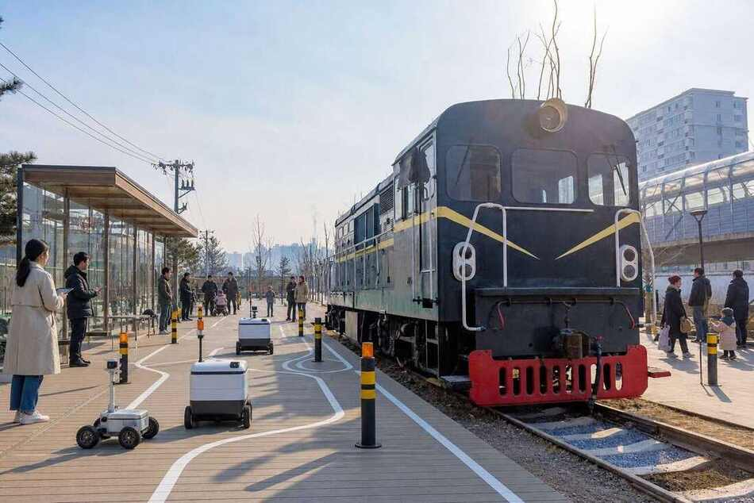
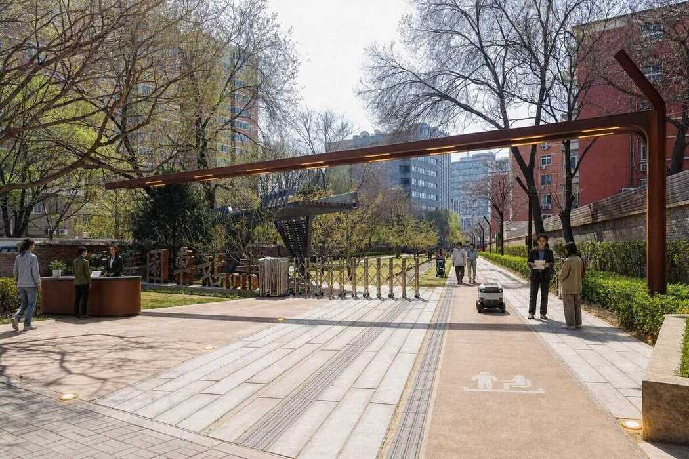
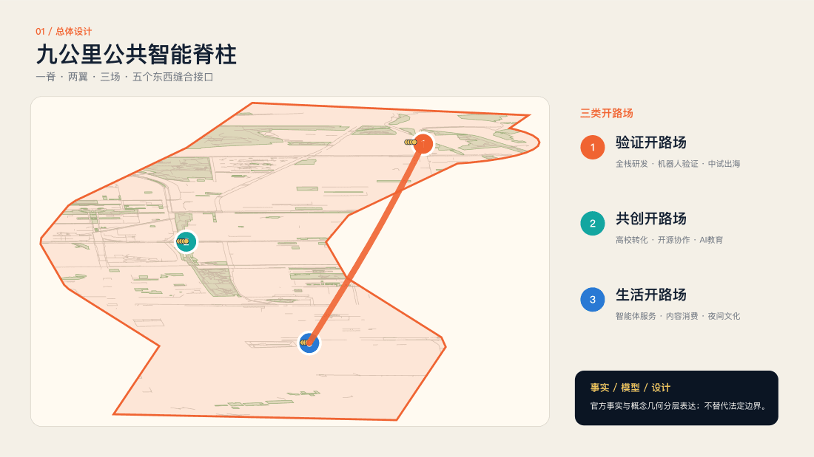
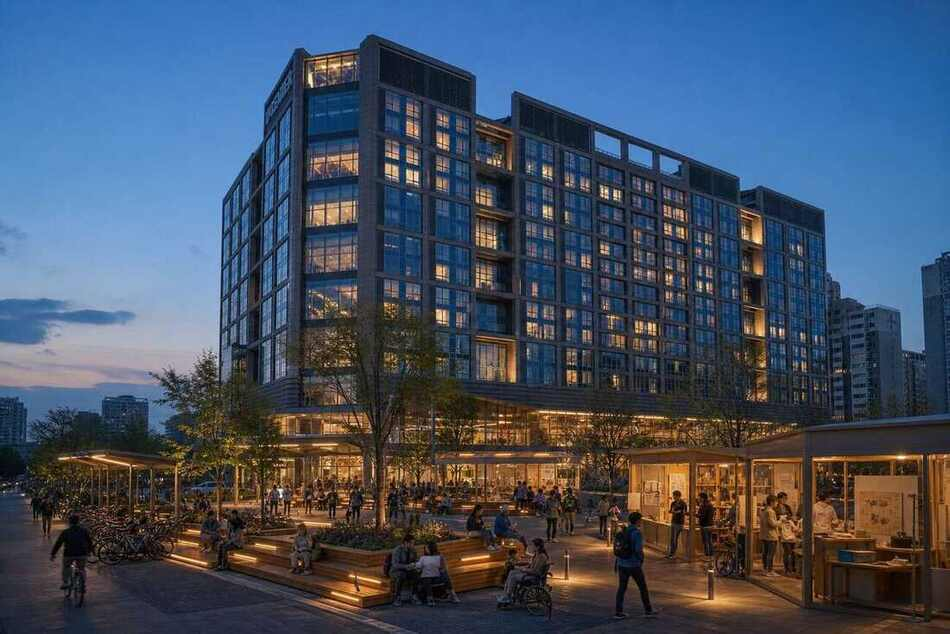
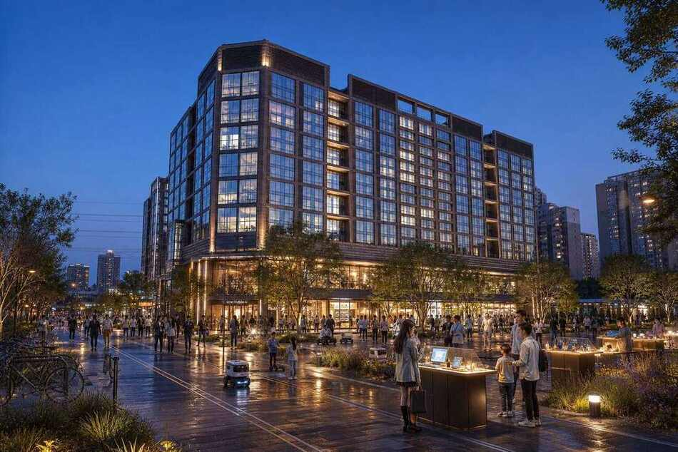
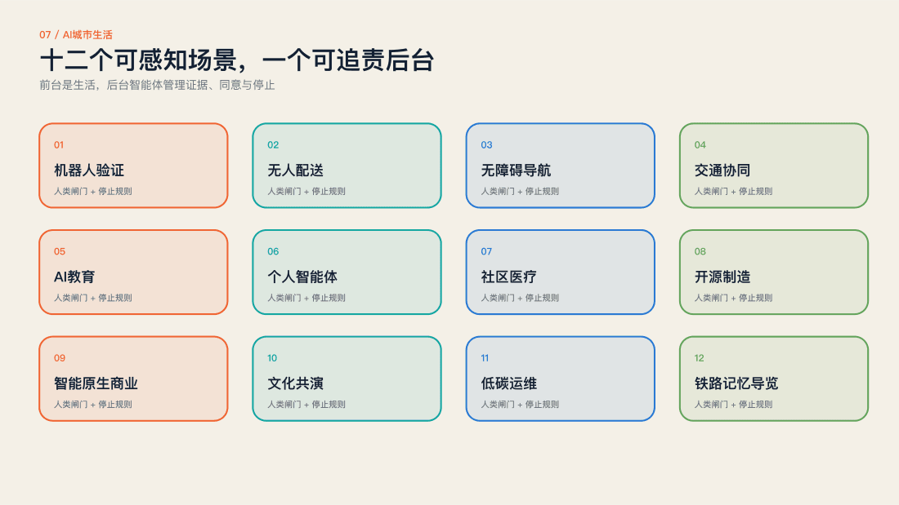
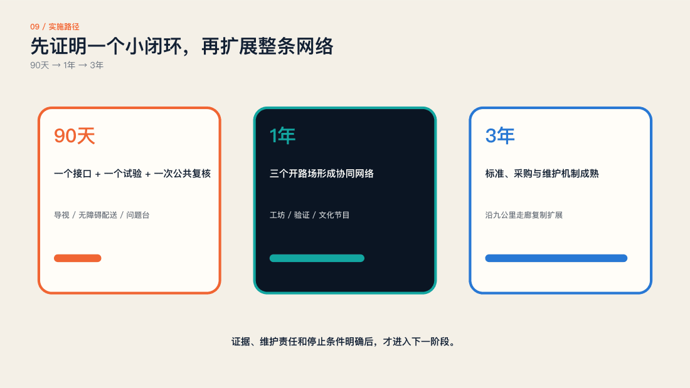

验证 / 众智园
A3方案册提供总平、结构、剖面、场景和分期实施。

把百年铁路转化为九公里 AI 城市原型场。


A3方案册提供总平、结构、剖面、场景和分期实施。

A3方案册提供总平、结构、剖面、场景和分期实施。

A3方案册提供总平、结构、剖面、场景和分期实施。


Masterplan, three design scales and key areas
Land use, mobility and blue-green commons
Buildings, renewal projects and AI scenarios
Core metrics and persisted self-check
Sources and assumptions are declared in the package.